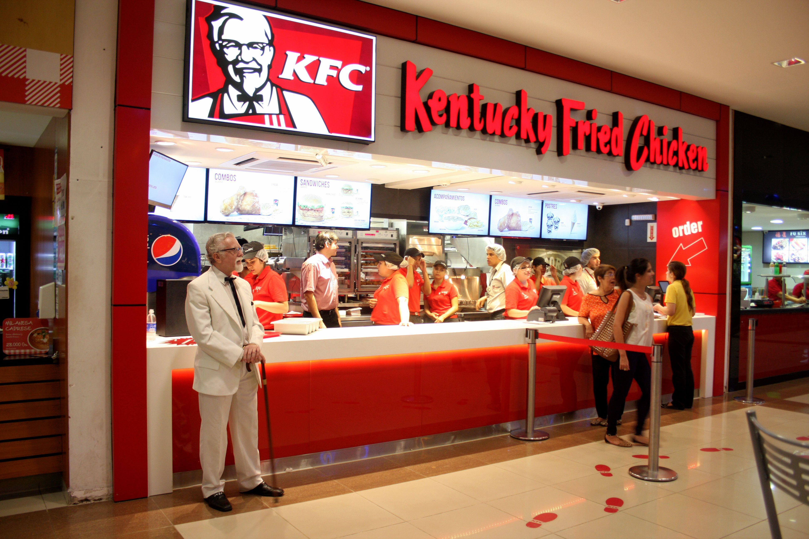

KFC es una cadena de restaurantes de comida rapida especializada en pollo frito. Fundada por Harland Sanders en 1952,
KFC se ha convertido en una de las marca mas reconocidas a nivel mundial, con presencia en mas de 150 paises y miles de locales en todo el mundo.
En Paraguay, KFC ha ganado popularidad por su delicioso pollo frito y su varierdad de opcines en el menu que incluye hamburguesas, papas firtas, ensaladas y postres.
La marca se destaca por su compromiso con la calidad de sus productos y su servicio al cliente, lo que ha contribuido a su exito en el mercado paraguayo.